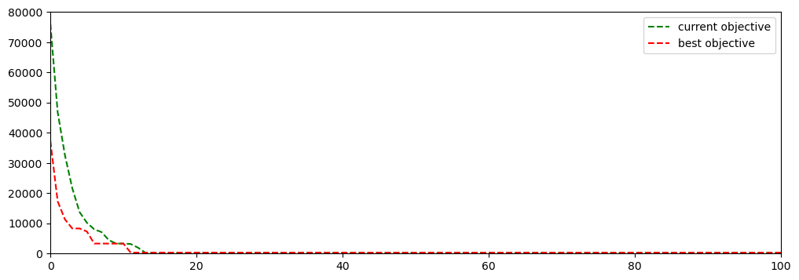

import numpy as np
import pandas as pd
import matplotlib.pyplot as plt
df = pd.read_csv("/Users/klian/dev/books/metaheuristics-java/data/gap/perf_records_ga.csv", names=['iteration', 'curr_obj', 'best_obj'])6 Genetic Algorithm for GAP
6.1 Algorithm Design
6.2 Implementation Details
GapSolution.java
package com.voyager.opt.metaheuristics.gap;
import lombok.Getter;
import java.util.Arrays;
import java.util.Random;
import java.util.stream.IntStream;
@Getter
public final class GapSolution {
/**
* reference to the instance to be solved
*/
private final GapInstance instance;
/**
* dimension: 1 * numTasks
* assigned agent index for each task
*/
private final int[] agentAssignments;
/**
* dimension: 1 * numAgents
* consumed capacity of each agent
*/
private final int[] consumedCapacities;
/**
* total objective value
*/
private int objective;
/**
* assignment cost, without penalties
*/
private int assignmentCost;
/**
* capacity violation penalties of all agents
*/
private int capacityViolationPenalty;
public GapSolution(GapInstance instance) {
this.instance = instance;
this.agentAssignments = new int[this.instance.getNumTasks()];
this.consumedCapacities = new int[this.instance.getNumAgents()];
Arrays.fill(this.agentAssignments, 0);
Arrays.fill(consumedCapacities, 0);
this.objective = 0;
this.assignmentCost = 0;
this.capacityViolationPenalty = 0;
}
/**
* copy constructor
* @param other the other solution to copy from
*/
public GapSolution(GapSolution other) {
this.instance = other.instance;
this.agentAssignments = new int[this.instance.getNumTasks()];
System.arraycopy(other.agentAssignments, 0,
this.agentAssignments, 0,
this.instance.getNumTasks());
this.consumedCapacities = new int[this.instance.getNumAgents()];
System.arraycopy(other.consumedCapacities, 0,
this.consumedCapacities, 0,
this.instance.getNumAgents());
this.objective = other.objective;
this.assignmentCost = other.assignmentCost;
this.capacityViolationPenalty = other.capacityViolationPenalty;
}
/**
* randomly assign tasks to agents
* @param random random number generator
*/
public void initialize(Random random) {
int[][] resources = this.instance.getResources();
for (int i = 0; i < instance.getNumTasks(); i++) {
int agentIdx = random.nextInt(instance.getNumAgents());
this.agentAssignments[i] = agentIdx;
this.consumedCapacities[agentIdx] += resources[agentIdx][i];
}
}
/**
* compute objective values
* @param capacityViolationPenalty penalty factor
*/
public void computeObjective(int capacityViolationPenalty) {
// compute assignment costs
this.assignmentCost = IntStream.range(0, instance.getNumTasks())
.map(taskIdx -> instance.getCosts()[agentAssignments[taskIdx]][taskIdx])
.sum();
// compute capacity violation costs
this.capacityViolationPenalty = IntStream.range(0, instance.getNumAgents())
.map(agentIdx -> capacityViolationPenalty *
Math.max(0, this.consumedCapacities[agentIdx] - instance.getCapacities()[agentIdx]))
.sum();
this.objective = this.assignmentCost + this.capacityViolationPenalty;
}
public int getAssignedAgent(int taskIdx) {
return this.agentAssignments[taskIdx];
}
/**
* assign agent to task
* @param taskIdx the task to be assigned
* @param agentIdx the agent index
*/
public void setAssignedAgent(int taskIdx, int agentIdx) {
int currAgentIdx = this.agentAssignments[taskIdx];
this.agentAssignments[taskIdx] = agentIdx;
this.consumedCapacities[currAgentIdx] -= instance.getResources()[currAgentIdx][taskIdx];
this.consumedCapacities[agentIdx] += instance.getResources()[agentIdx][taskIdx];
}
}GapGeneticAlgo.java
package com.voyager.opt.metaheuristics.gap.ga;
import com.voyager.opt.metaheuristics.gap.GapInstance;
import com.voyager.opt.metaheuristics.gap.GapInstanceReader;
import com.voyager.opt.metaheuristics.gap.GapSolution;
import com.voyager.opt.metaheuristics.utils.PerfRecord;
import com.voyager.opt.metaheuristics.utils.PerfRecordsWriter;
import lombok.Getter;
import lombok.Setter;
import java.io.File;
import java.util.ArrayList;
import java.util.Comparator;
import java.util.List;
import java.util.Random;
@Getter
@Setter
public class GapGeneticAlgo {
private static final int MAX_GENERATIONS = 1000;
private static final int POPULATION_SIZE = 100;
private static final double MUTATION_RATE = 0.2;
private static final int TOURNAMENT_SIZE = 5;
private final GapInstance instance;
/**
* random number generator
*/
private final Random random;
/**
* best solution
*/
private GapSolution bestSolution;
/**
* performance records
*/
private final List<PerfRecord<Integer>> perfRecords;
private final int capacityViolationPenalty = 1000;
public GapGeneticAlgo(GapInstance instance) {
this.instance = instance;
this.random = new Random(42);
this.perfRecords = new ArrayList<>();
}
/**
* main workflow
*/
public void solve() {
// Initialize population
List<GapSolution> population = initializePopulation();
// Evolution loop
for (int generation = 0; generation < MAX_GENERATIONS; generation++) {
// collect and save performance metrics
PerfRecord<Integer> perf = collectPerformanceMetrics(population);
perf.setIteration(generation);
perfRecords.add(perf);
System.out.println(perf.toCommaDelimitedString());
// Crossover
List<GapSolution> offspring = crossover(population);
// Mutation
mutate(offspring);
// Replace old population with new population
population.addAll(offspring);
population.sort(Comparator.comparingInt(GapSolution::getObjective));
List<GapSolution> nextGenPop = new ArrayList<>(POPULATION_SIZE);
for (int i = 0; i < POPULATION_SIZE; i++) {
nextGenPop.add(population.get(i));
}
population = nextGenPop;
}
// Select the best solution from the final population
PerfRecord<Integer> perf = collectPerformanceMetrics(population);
perf.setIteration(MAX_GENERATIONS);
perfRecords.add(perf);
}
/**
* randomly create a population of solutions
* @return new solutions
*/
private List<GapSolution> initializePopulation() {
List<GapSolution> population = new ArrayList<>(POPULATION_SIZE);
for (int i = 0; i < POPULATION_SIZE; i++) {
GapSolution solution = new GapSolution(instance);
solution.initialize(random);
solution.computeObjective(capacityViolationPenalty);
population.add(solution);
}
return population;
}
/**
* identify the best solution from the given population and average objective value
* @param population input population
* @return performance record
*/
private PerfRecord<Integer> collectPerformanceMetrics(List<GapSolution> population) {
GapSolution bestSol = population.stream()
.sorted(Comparator.comparingDouble(GapSolution::getObjective))
.toList().getFirst();
if (this.bestSolution == null || this.bestSolution.getObjective() > bestSol.getObjective()) {
this.bestSolution = bestSol;
}
double avgObj = population.stream()
.mapToInt(GapSolution::getObjective)
.average()
.getAsDouble();
return new PerfRecord<>(0, (int) avgObj, bestSolution.getObjective());
}
/**
* select the best solution from multiple candidate solutions
*
* @param population input solution population
* @return best solution
*/
private GapSolution selectParent(List<GapSolution> population) {
GapSolution champion = population.get(random.nextInt(POPULATION_SIZE));
for (int i = 0; i < TOURNAMENT_SIZE - 1; i++) {
GapSolution challenger = population.get(random.nextInt(POPULATION_SIZE));
if (challenger.getObjective() < champion.getObjective()) {
champion = challenger;
}
}
return champion;
}
/**
* crossover operator that generates a new solution population
*
* @param parents parent solutions
* @return child solutions
*/
private List<GapSolution> crossover(List<GapSolution> parents) {
// Here, we can use different crossover techniques such as one-point crossover or uniform crossover
// For simplicity, let's use one-point crossover
List<GapSolution> offspring = new ArrayList<>(POPULATION_SIZE);
for (int i = 0; i < POPULATION_SIZE; i++) {
GapSolution parent1 = selectParent(parents);
GapSolution parent2 = selectParent(parents);
int crossoverPoint = random.nextInt(instance.getNumTasks() - 1) + 1; // Ensure crossoverPoint is not 0
// Create offspring by swapping genes between parents
GapSolution offspring1 = new GapSolution(parent1);
GapSolution offspring2 = new GapSolution(parent2);
for (int j = crossoverPoint; j < instance.getNumTasks(); j++) {
int temp = offspring1.getAssignedAgent(j);
offspring1.setAssignedAgent(j, offspring2.getAssignedAgent(j));
offspring2.setAssignedAgent(j, temp);
}
offspring1.computeObjective(capacityViolationPenalty);
offspring2.computeObjective(capacityViolationPenalty);
offspring.add(offspring1);
offspring.add(offspring2);
}
return offspring;
}
/**
* mutation introduces minor changes to the given solutions
*
* @param population solutions to perform mutations on
*/
private void mutate(List<GapSolution> population) {
for (GapSolution solution : population) {
if (random.nextDouble() < MUTATION_RATE) {
for (int taskIdx = 0; taskIdx < instance.getNumTasks(); taskIdx++) {
if (random.nextDouble() < MUTATION_RATE / 2.0) {
int newAgentIdx = random.nextInt(instance.getNumAgents());
solution.setAssignedAgent(taskIdx, newAgentIdx);
}
}
solution.computeObjective(capacityViolationPenalty);
}
}
}
public static void main(String[] args) {
File file = new File("src/main/resources/data/gap/gap1.txt");
String filePath = file.getAbsolutePath();
String outputFilename = "/Users/klian/dev/books/metaheuristics-java/data/gap/perf_records_ga.csv";
List<GapInstance> instances = GapInstanceReader.read(filePath);
GapInstance instance = instances.get(4);
GapGeneticAlgo geneticAlgo = new GapGeneticAlgo(instance);
geneticAlgo.solve();
// save performance records
PerfRecordsWriter.write(outputFilename, geneticAlgo.getPerfRecords());
}
}6.3 Performance Illustration
df| iteration | curr_obj | best_obj | |
|---|---|---|---|
| 0 | 0 | 76088 | 37289 |
| 1 | 1 | 46838 | 17288 |
| 2 | 2 | 32506 | 11302 |
| 3 | 3 | 21643 | 8301 |
| 4 | 4 | 13734 | 8301 |
| ... | ... | ... | ... |
| 996 | 996 | 255 | 255 |
| 997 | 997 | 255 | 255 |
| 998 | 998 | 255 | 255 |
| 999 | 999 | 255 | 255 |
| 1000 | 1000 | 255 | 255 |
1001 rows × 3 columns
fig, ax = plt.subplots(1, 1, figsize=(12, 4))
ax.plot(df['iteration'], df['curr_obj'], 'g--', label="current objective")
ax.plot(df['iteration'], df['best_obj'], 'r--', label="best objective")
ax.legend()
ax.set_xlim([0, 100])
ax.set_ylim([0, 80000])